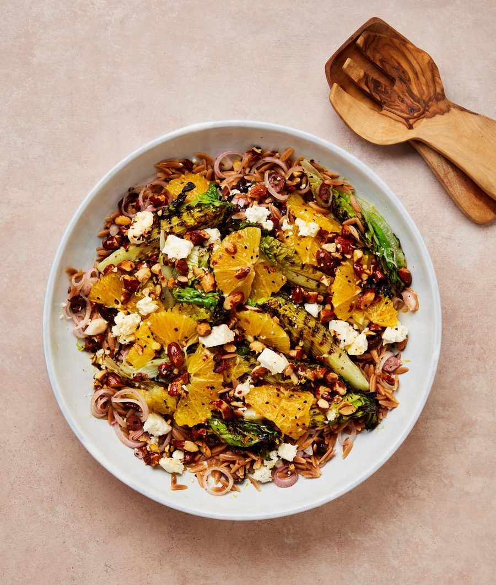

Grilled lettuce with orange, almond and feta

A bit of heat transforms crunchy lettuce leaves into a smoky, flavour-bomb. I use orzo in the base of this salad to absorb the dressing, but feel free to swap it with giant couscous or a similar small-shaped pasta. The dressing also works beautifully with raw salad leaves or spooned over roast chicken.
For the orange and almond dressing
Put the shallots, lemon juice, an eighth of a teaspoon of salt and a good grind of black pepper in a medium bowl and mix well.
In a dry, medium saucepan on a medium-high heat, toast the orzo, stirring frequently, for seven minutes, until golden, then pour in just-boiled salted water to cover and leave to cook for seven to nine minutes, until softened but still with a bite. Drain well, then stir the pasta into the shallot bowl and set aside.
Meanwhile, put a griddle plan on a high heat and ventilate the kitchen. Once the pan is hot, grill the olives for seven minutes, until lightly charred all over, then tip on to a board, slice thinly and stir into the orzo bowl.
Working in two batches, grill the lettuce quarters, turning them as necessary, for six minutes, until nicely charred on all sides, then transfer to a large plate or tray.
Whisk the first four dressing ingredients in a small bowl with a quarter-teaspoon of salt. Using a small, serrated knife, top and tail the orange, then cut away and discard the skin and white pith. Cut the orange into ½cm-thick rounds, then tear these into half-moons and gently toss in the dressing with the almonds.
Scatter the still-warm orzo mix over a large platter, arrange the grilled lettuce quarters on top and sprinkle over the feta. Spoon over the dressing and serve.